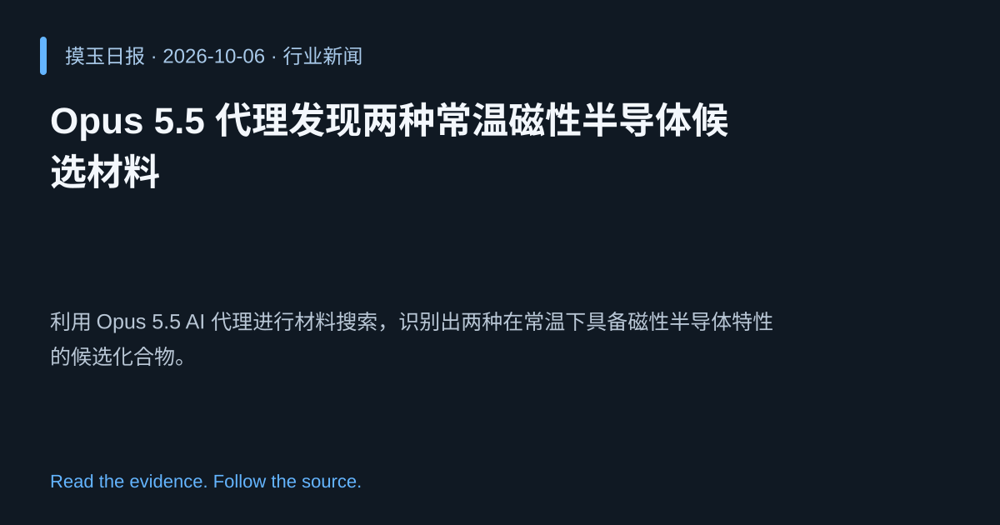

2026-10-06 · Asia/Shanghai · 行业新闻 · #2
Opus 5.5 代理发现两种常温磁性半导体候选材料
Opus 5.5 agents discover two room-temperature magnetic semiconductor candidates
利用 Opus 5.5 AI 代理进行材料搜索，识别出两种在常温下具备磁性半导体特性的候选化合物。
为什么值得关注
展示 AI 在加速新材料发现中的潜力，可能推动自旋电子学应用。
- AI 代理通过大规模模拟快速筛选材料。
- 常温磁性半导体对储存和传感器有重要意义。
- Opus 5.5 的自驱动发现流程提升研发效率。

热度 66.5 / 100；排名与评分保留该期记录。